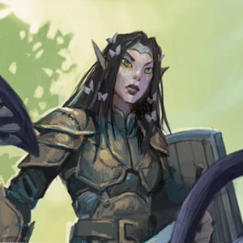
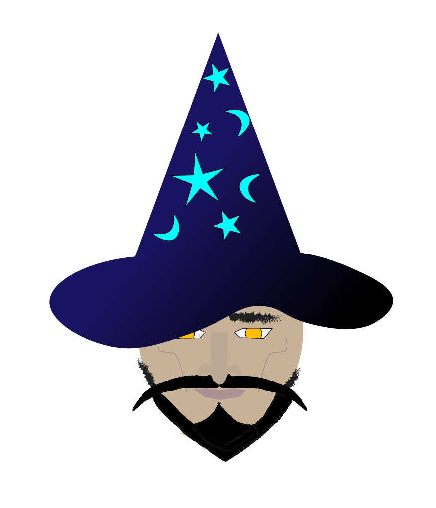
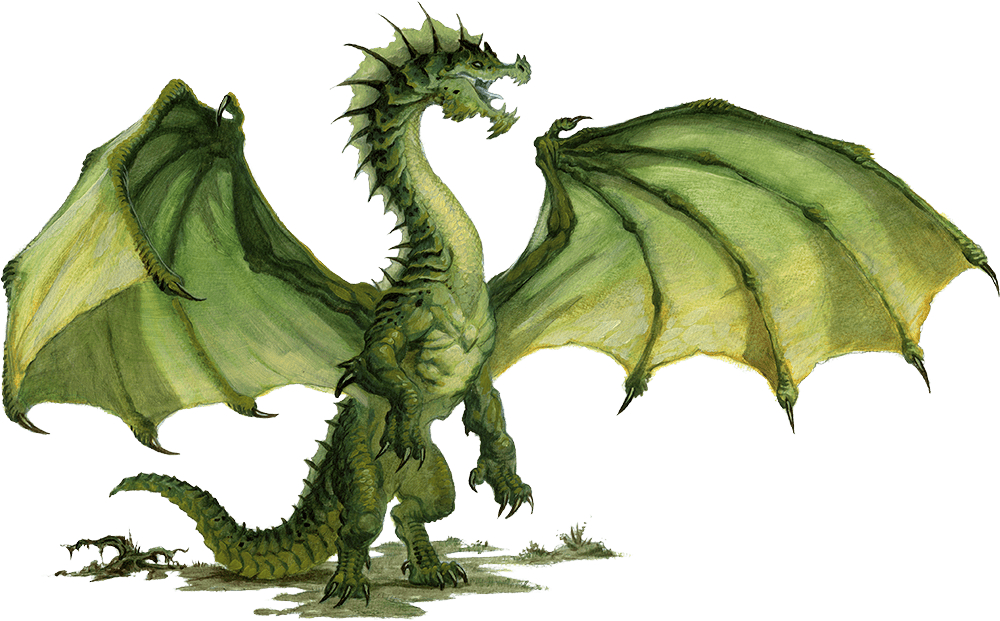

Wyllow
- The archdruid and "mother" of the forest. Literally the wyllow of wyllow's wood. Its her wood.
- Found in a state of distress, Wyllow hardly took time to greet the group of interlopers with kindness. She issued the same warning as what could be seen on some signs upon entering, "Do no harm, lest ye be harmed"
- She would prefer that you quickly pass through the forest into the depths below, for those who seek treasure typically seek to harm the denizens of the woods.

Yinark
- Husband of wyllow, wizard of undermountain.
- He was first seen storming out of wyllow's tower after a disagreement.
- After briefly surveying his surroundings, he conjured a small stormy cloud and flew away. Based on his trajectory, it looks like he may have fled to the northeast.

Captain Averette "Salty Dog" Sweete
- Had a change of heart after losing his ship to the filthy magic that allowed you to enter Wyllowswood from the surface.
- Now before he can go get his ship back, he wants to collect some booty to ease his journey.
- He also is very fond of pikmin, but is bitter towards The Woodsman and The Primeval.

The Primeval
- The first pikmin ever to be born. Their recent history and exact nature is unclear, however some pikmin consider the primeval to be omnibenevolent.
- They have since disappeared, allegedly undertaking a journey to unite the pikmin people and bring balance to wyllowswood.
- Inside the cabin near the pikmin village, there are several framed photos of both The Primeval and The Woodsman casually sharing tea.

Valdemar
- The Adolescent Green Dragon. Order's from a lord dictate that your team is to locate and procure magical artifacts and treasure, particularly any treasure that originated as part of the dragon's hoard.
- Whoever it was that sent you on this mission has allowed you the freedom of operating on your own terms. Annhilation of the green dragon Valdemar is optional. Wyllow however does not sanction violence even against such a beast.
- Confronting you atop the cabin next to the pikmin village, this serpent has hinted that magic users are partly to blame for the spellplague. Even trying to guilt your party into instead returning magic artifacts and lost treasure to his hoard atop the northern mountains. Only once you've "returned" enough treasure will he have audience with you again. Oh and leave your weapons at the door. (Its an ancient dragon cultural custom)
